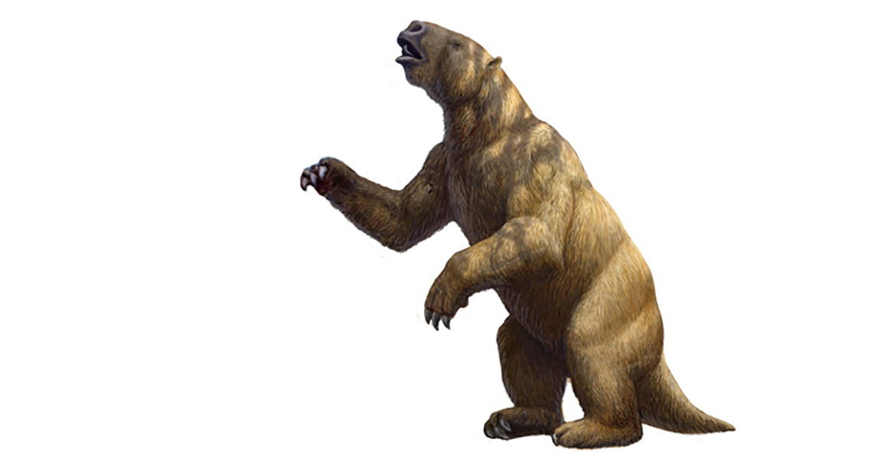

Algunos de los Animales que vivieron hace miles de años en Argentina
-
Argentavis
Es una de las mayores aves voladoras de todos los tiempos. Tenia unos 8 metros de envergadura, bastante grande en comparación con todas las aves actuales. Con su pico en forma de gancho desgarraba la carne y sus patas eran fuertes armadas con garras afiladas.
Ver mas... -

Smilodon
Smilodon es un género extinto de félidos de dientes de sable de la subfamilia de los macairodontinos. Apareció en América del Norte a finales del Plioceno y se expandió a América del Sur durante el Gran intercambio americano.
Ver mas... -

Megatherium
Megatherium es un mamífero que vivió hace entre 2 millones y 7.000 años, en lo que hoy es Sudamérica. Es también conocido como el perezoso terrestre gigante y se halló desde Argentina hasta Texas, poseía unas impresionantes dimensiones, de más de 6 metros en los adultos.
Ver mas... -

Glyptodon
Glyptodon es un género extinto de grandes mamíferos acorazados pertenecientes a la subfamilia Glyptodontinae, emparentado con los armadillos actuales, que vivió durante la época del Pleistoceno. Medía unos 3.3 metros de longitud, 1.5 metros de altura y pesaba más de dos toneladas
Ver mas...